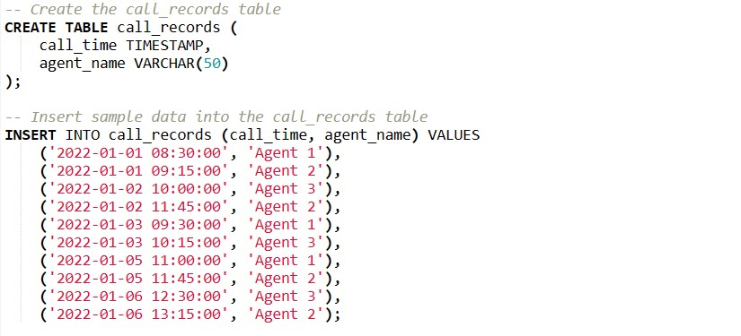
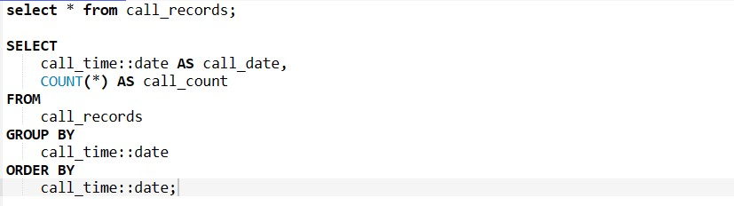
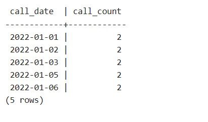
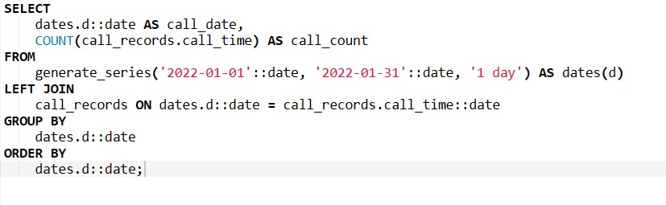
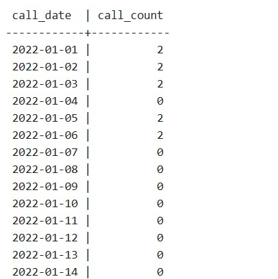
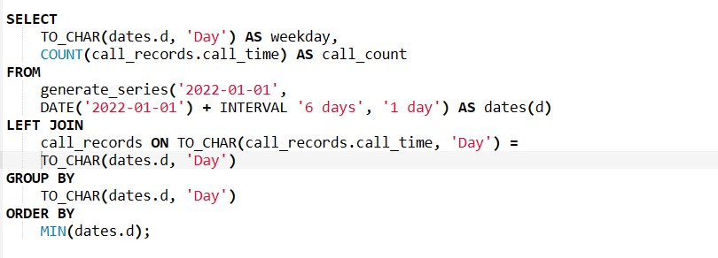

A common SQL Interview Question
Imagine a scenario where you're tasked with analyzing daily call volumes in a call center.You have a database table containing call records, including the call time and the agent's name.
Lets Setup the table and insert some data first.
Naively querying this table for daily call counts might yield inaccurate results, particularly when there are days with zero calls. A naive query would look like below.
The above query results in the following output, notice the date 2022-01-04 is missing from the output since no call were recorded on that date.
Introducing generate_series
PostgreSQL's generate_series function comes to the rescue in such scenarios. This powerful function generates a series of values, which can be dates in our case, allowing us to fill in the gaps for missing dates in our dataset. By combining generate_series with a LEFT JOIN operation, we can ensure that our query includes all dates within a specified range, even if there are no corresponding call records for those dates.
Let's illustrate this with a SQL query:
The above query generate the following output:
The advantages of such a query might not be useful most of the times, but there are instances where filling such gaps with no dataset can be an improvement for readability and sometimes reveal valuable insights. Lets look at a query showing call volumes based on the day of Week.
Lets compare the results of a simple query vs including all the days of a week.
Conclusion
In the realm of data analysis, accurate and comprehensive querying is paramount for deriving meaningful insights and making informed decisions. However, traditional SQL queries may encounter limitations when faced with missing data or gaps in the dataset. These gaps can lead to incomplete analyses and hinder the ability to extract valuable insights from the available data. In such scenarios
Incorporating this technique into your SQL toolkit empowers you to handle similar challenges effectively, not only in call center management but also in various other data analysis scenarios where missing data can impact the accuracy of your insights.
I hope this blog post has provided valuable insights into overcoming common challenges in call center management and inspired you to explore the full potential of PostgreSQL for your data analysis needs. Happy querying!
All the queries used in the blog can be found on my github page here.